13. Rocket terrestre¶
En aquesta pràctica, programarem un joc que consisteix a desembarcar a la lluna un coet que tindrà un moviment realista amb la gravetat i amb l’encesa dels motors. L’objectiu és activar els motors en el moment adequat de manera que el coet aterri a baixa velocitat i no es bloquegi.
{kind=link}
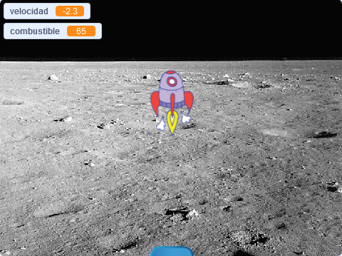
; BR |
Comencem el | Editor_de_scratch |.
; BR |
Premeu el botó d'idioma | Botó-Idioma | A la barra superior i va triar ** espanyol **.
; BR |
Eliminem l'objecte CAT prement a la icona del cub d'escombraries.
; Suprimeix-Gato |
; BR |
Ara escollim un fons adequat per al nostre joc. Canviem el fons de l'escenari per ** luna **.
Premeu el botó Trieu un fons | Select-Fondo |.
Estem buscant a l’espai ** **.
I seleccionem el fons ** lluna **.
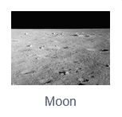
; BR |
A continuació, afegim un nou personatge, un coet ** **.
Premeu el botó Trieu un objecte | Select-objecte |.
Estem buscant a la secció ** tot **.
i seleccionem l'objecte ** coetship **.
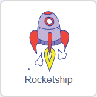
; BR |
Ara crearem la variable ** velocitat ** que emmagatzemarà la velocitat de caiguda del coet a la lluna. Si aquesta variable és molt alta quan el coet xoca amb la lluna, el coet es destruirà.
Premeu el botó variable | Botó-Variables |,
Premeu per crear una variable | Botó-Crear-Variable |.
Canviem el nom de la variable a ** velocitat **
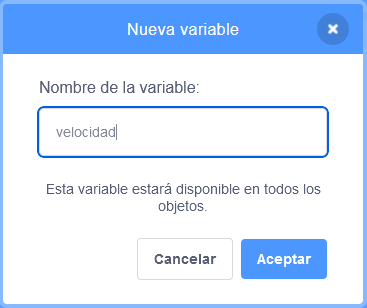
Finalment, feu clic al botó ** acceptar **
; BR |
Ara crearem la variable ** combustible ** que emmagatzemarà la quantitat de combustible que el coet ha de ser capaç d’encendre els motors i aturar la caiguda a la lluna. Si el combustible s’acaba, el coet no pot aturar la caiguda.
Premeu el botó variable | Botó-Variables |,
Premeu per crear una variable | Botó-Crear-Variable |.
Canviem el nom de la variable a ** combustible **
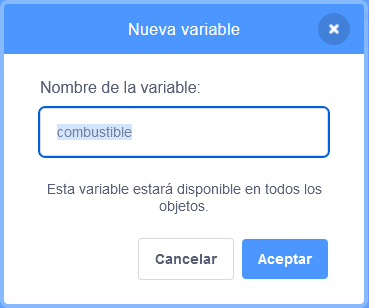
Finalment, feu clic al botó ** acceptar **
; BR |
Realitzem una subrutina que inicialitza la posició i la mida del coet al començament del programa. També establirà els valors inicials de les variables.
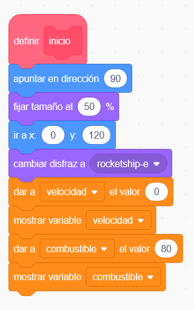
; BR |
Realitzem una subrutina que mou el coet durant el vol. La velocitat augmentarà quan encenem els motors i augmentem amb els motors.
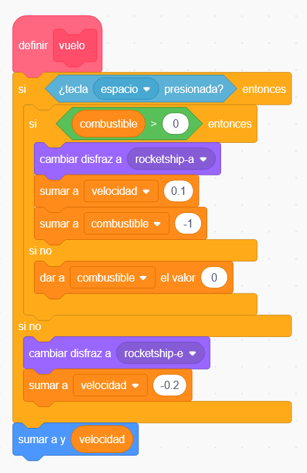
; BR |
Realitzem una subrutina que atura el coet en arribar al terra i determina si la velocitat és massa alta o correcta per donar el desembarcament per bé.
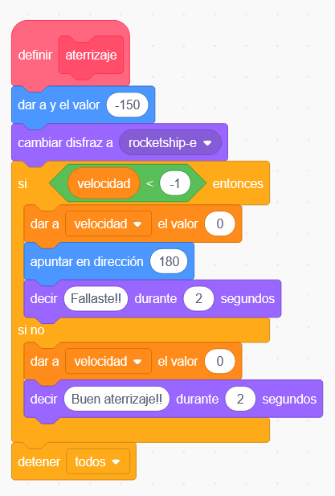
; BR |
Programem el programa principal que compleix totes les subrutines.
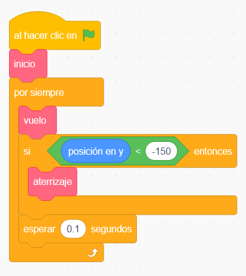
; BR |
A continuació, afegim un caràcter nou, un botó ** ** que servirà com a plataforma de desembarcament.
Premeu el botó Trieu un objecte | Select-objecte |.
Estem buscant a la secció ** tot **.
i seleccionem l'objecte ** Botó2 **.
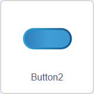
; BR |
Afegim el programa d’inicialització del botó.
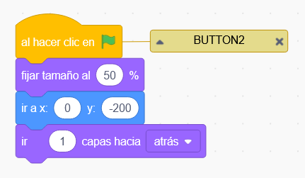
; BR |
Premeu la bandera verda | Flag-Verde | Per provar el funcionament del programa.
{kind=link}
{kind=link}
{kind=link}
{kind=link}
{kind=link}
Reptes¶
- Afegiu meteorits que es mouen d’un costat a l’altre lentament de manera que el coet els hagi de superar.
- Juga diverses vegades per establir la millor marca de combustible sobrant un cop aterrat el coet. A partir d’aquí, podeu descarregar el combustible inicial del programa per dificultar el joc.